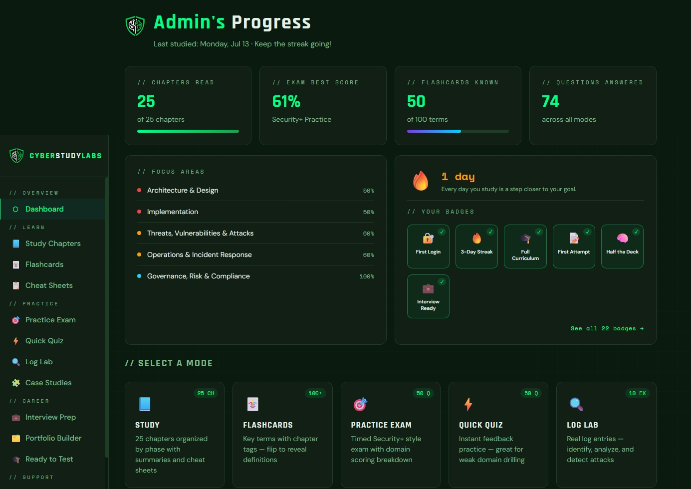

CyberStudyLabs
Live · subscriptionA training platform for CompTIA Security+ (SY0-701) preparation and SOC analyst readiness, serving individual subscribers, instructors, and schools.
- Official CompTIA Delivery Partner — authorized to use CompTIA branding and distribute discounted exam vouchers
- 25-chapter curriculum with 100 domain-tagged quiz questions, practice exams, flashcards, and a completion certificate — enough material to run a full bootcamp
- Portfolio Builder where students produce real work samples: incident-response reports, playbooks, and triage logs, persisted to the cloud
- Instructor dashboard with class codes, rosters, and per-student progress tracking, plus 13 printable student and instructor documents
- Six-tier access model with live Stripe payments and webhook-driven tier management
JavaScript · Supabase · Stripe · Vercel
